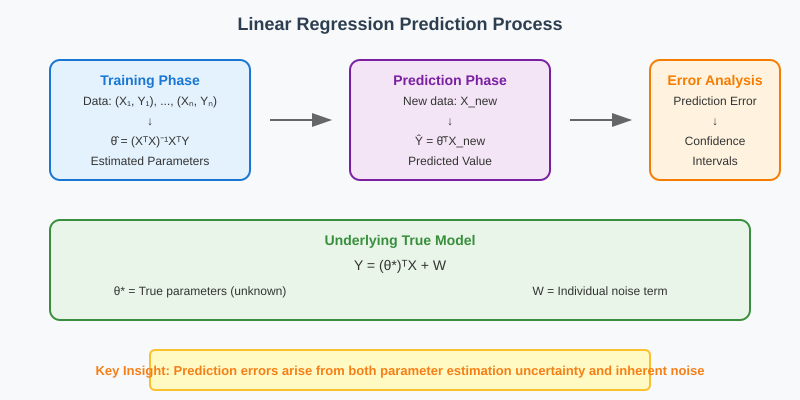
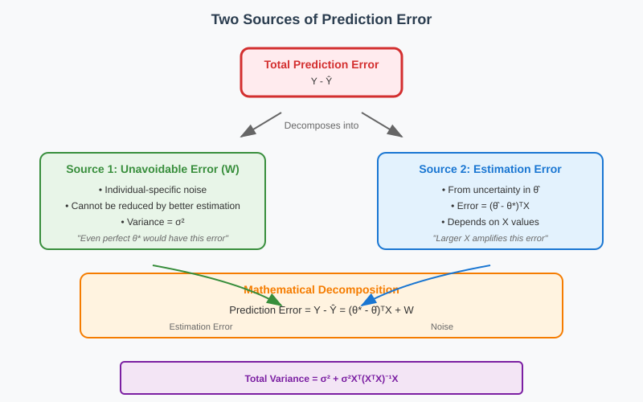
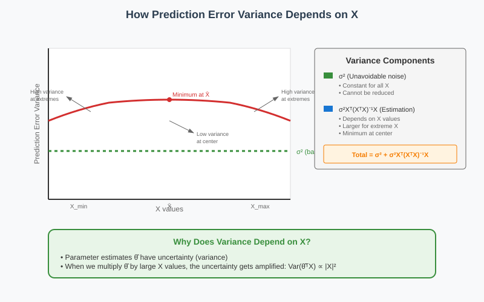
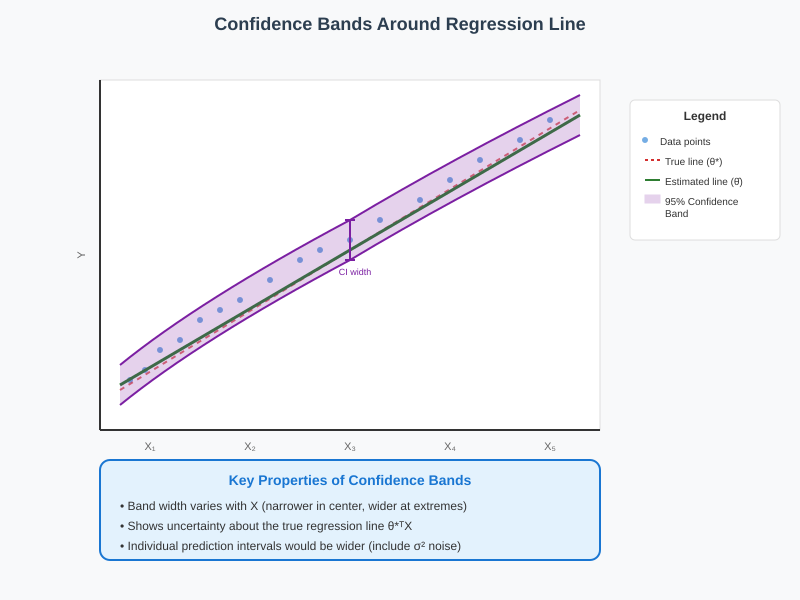
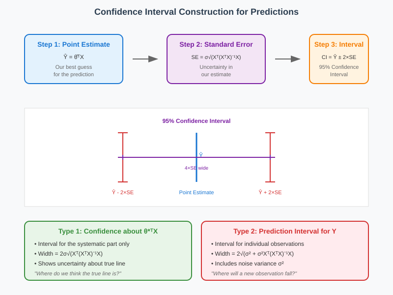

Prediction Errors in Linear Regression
📋 Quick Navigation
- 🎯 Introduction to Prediction Errors
- ⚠️ Sources of Prediction Error
- 📐 Prediction Error Variance Formula
- 📊 Confidence Bands and Intervals
- 🛠️ Practical Implementation
- 🔬 Mathematical Assumptions
- 📚 References & Further Reading
🎯 Introduction to Prediction Errors
When we estimate parameters θ̂ using linear regression and then use these estimates to make predictions for new observations, our predictions will contain errors. Understanding these errors is crucial for assessing the reliability of our predictions and constructing appropriate confidence intervals.

The Prediction Process
After running regression on our training data, we obtain parameter estimates θ̂. For a new observation with features X, we predict:
Ŷ = θ̂ᵀX
However, since θ̂ are random variables (they depend on our sample), our predictions will also be random and contain errors.
Key Assumptions
We assume the world follows a true linear structural model:
Y = (θ*)ᵀX + W
Where: - θ represents the true (unknown) parameters - W is idiosyncratic noise for each individual - θ̂ is an unbiased estimator of θ
⚠️ Sources of Prediction Error
There are two fundamental sources of error when making predictions with estimated parameters:

1. Unavoidable Error from Noise (σ²)
Even if we knew the true parameters θ perfectly, we would still have prediction errors due to the individual-specific noise term W*. This noise:
- Is idiosyncratic to each individual
- Has variance σ²
- Cannot be reduced by better estimation
- Represents the fundamental unpredictability in the system
2. Estimation Error from θ̂
Since we don't know θ exactly, the difference between our estimate θ̂ and the true value θ introduces additional error:
Error from estimation = (θ̂ - θ*)ᵀX
This error: - Has variance that depends on X - Can be reduced with larger sample sizes - Follows from the variance of θ̂ - Is amplified when X values are large
Total Prediction Error
The total prediction error combines both sources:
Prediction Error = Y - Ŷ = (θ* - θ̂)ᵀX + W
📐 Prediction Error Variance Formula
The variance of our prediction error can be decomposed into the two sources discussed above:

Mathematical Decomposition
The total prediction error variance is:
Var(Prediction Error) = σ² + σ²Xᵀ(XᵀX)⁻¹X
Where: - σ²: Unavoidable error variance from noise - σ²Xᵀ(XᵀX)⁻¹X: Additional variance from parameter estimation error
Key Properties
- X-Dependent Variance: Prediction error variance changes with the values of X
- Larger X, Larger Error: When X values are large, estimation errors in θ̂ get amplified
- Design Matrix Influence: The term (XᵀX)⁻¹ reflects how well-conditioned our design matrix is
- Minimum at Center: For simple regression, error is minimized near the center of the X distribution
Implications for Prediction Quality
- Predictions are more reliable for X values similar to those in the training data
- Extrapolation to extreme X values increases prediction uncertainty
- The geometry of the training data affects prediction quality everywhere
📊 Confidence Bands and Intervals
Using the prediction error variance formula, we can construct confidence intervals and bands around our predictions:

Confidence Interval Construction
For a 95% confidence interval around our prediction Ŷ:
CI = Ŷ ± 2σ√(Xᵀ(XᵀX)⁻¹X)

Properties of Confidence Bands
- Variable Width: The width changes with X values
- Narrower at Center: For simple regression, intervals are narrower near the mean of X
- Wider for Extrapolation: Intervals become wider as we move away from the training data
- Two Types of Intervals:
- For the mean: Confidence about θ*ᵀX (the systematic part)
- For individual predictions: Include additional noise variance σ²
Practical Interpretation
- The confidence band shows where we think the true regression line might be
- Individual prediction intervals are wider because they include idiosyncratic noise
- The shape reflects our uncertainty about the model parameters
🛠️ Practical Implementation
Standard Errors and Their Uses
Standard errors σⱼ (standard deviation of θ̂ⱼ) are fundamental for:
| Application | Formula | Purpose |
|---|---|---|
| Confidence Intervals | CI = [θ̂ⱼ - 2σⱼ, θ̂ⱼ + 2σⱼ] | Uncertainty quantification |
| Hypothesis Testing | Reject H₀: θⱼ* = 0 if 0 ∉ CI | Statistical significance |
| Wald Test | Test statistic = θ̂ⱼ/σⱼ | Formal hypothesis testing |
Software Implementation
Modern regression software automatically provides:
- ✅ Parameter estimates θ̂
- ✅ Standard errors σⱼ
- ✅ Confidence intervals
- ✅ Prediction intervals
- ✅ Test statistics
Model Validation Checklist
Before trusting prediction intervals, verify:
- [ ] Linearity: The true relationship is approximately linear
- [ ] Homoscedasticity: Constant error variance
- [ ] Independence: Observations are independent
- [ ] Normality: Errors are approximately normal (for exact intervals)
- [ ] No Outliers: Extreme observations don't dominate
🔬 Mathematical Assumptions
Structural Model Assumptions
The validity of our prediction error analysis depends on several key assumptions:
1. True Linear Relationship
Y = (θ*)ᵀX + W
2. Unbiased Estimation
E[θ̂] = θ*
3. Known Error Variance Structure
We assume we can estimate σ² consistently and that the error structure is homoscedastic.
When Assumptions Are Violated
If the mathematical assumptions are violated:
- Confidence intervals may have incorrect coverage
- Hypothesis tests may have wrong Type I error rates
- Prediction intervals may be too narrow or too wide
- Standard errors may be biased
Robustness Considerations
- Mild nonlinearity: Often acceptable if the linear approximation is good locally
- Heteroscedasticity: Can use robust standard errors (White's correction)
- Non-normality: Large sample theory often saves us (Central Limit Theorem)
- Model misspecification: More serious; requires model diagnostics and possibly different approaches
📚 References & Further Reading
📖 Foundational Texts
- Greene, W. H. (2018). Econometric Analysis (8th ed.). Pearson.
-
Comprehensive coverage of prediction intervals and confidence bands
-
Wooldridge, J. M. (2019). Introductory Econometrics: A Modern Approach (7th ed.). Cengage Learning.
-
Clear exposition of prediction error decomposition
-
Hastie, T., Tibshirani, R., & Friedman, J. (2009). The Elements of Statistical Learning (2nd ed.). Springer.
- Advanced treatment of prediction accuracy and model assessment
🔬 Research Papers
- White, H. (1980). A heteroskedasticity-consistent covariance matrix estimator and a direct test for heteroskedasticity. Econometrica, 48(4), 817-838.
-
Robust standard errors for heteroscedastic data
-
Efron, B., & Tibshirani, R. J. (1993). An Introduction to the Bootstrap. Chapman & Hall.
- Alternative approaches to confidence interval construction
🌐 Online Resources
- Scikit-learn Prediction Intervals
-
Practical implementation examples
-
Community discussion on interval interpretation
- Visual explanations of the concepts
Interactive Examples: - Prediction interval visualization - Confidence band construction - Error variance decomposition